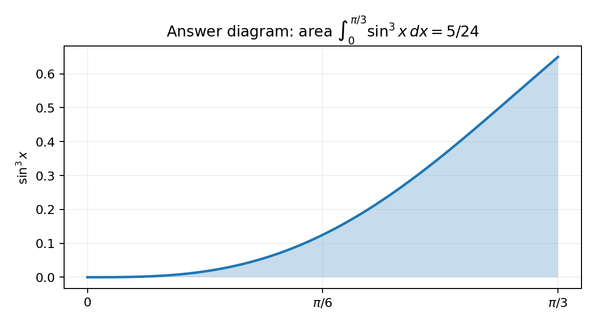

3. (b) Hence find, using algebraic integration,
$$\int_0^{\pi/3}\sin^3x\,dx$$
(4)
[4 marks]
Not covered in the lesson — official-reference reconstruction below; no further live working was recovered, so that stopping point remains deferred.
Strategy: why this method applies. The word “Hence” tells us to reuse the proved triple-angle identity and rearrange it for the integrand before integrating.
Common trap. Integrating $\sin^3x$ as though the power were a constant multiplier does not use a valid rule.
“Hence” means reuse part (a). Rearrange:
$$\sin3x=3\sin x-4\sin^3x$$
$$4\sin^3x=3\sin x-\sin3x$$
$$\sin^3x=\frac14(3\sin x-\sin3x).$$
Why “hence”. The command word “hence” instructs us to reuse the identity proved in part (a); the integral of $\sin^3x$ becomes tractable only after $\sin^3x$ is rewritten in terms of $\sin x$ and $\sin3x$, which are elementary to integrate.
Intermediate logic. From $\sin3x=3\sin x-4\sin^3x$, isolate the cube: $4\sin^3x=3\sin x-\sin3x$, so $\sin^3x=\tfrac14(3\sin x-\sin3x)$. This turns a stubborn odd power into a linear combination of two standard sine terms.
Definition in play. Integrating an odd power of sine directly would need a substitution $u=\cos x$; here the identity route is faster and is precisely what “hence” rewards, avoiding a separate substitution altogether.
Presentation. Show the rearrangement to $\sin^3x=\tfrac14(3\sin x-\sin3x)$ as its own line before any integration. Transfer cue: whenever a “hence” integral involves a power of sine or cosine and a prior multiple-angle identity, rearrange that identity to express the power linearly, then integrate term by term.
Recognising the trigger. The word "hence" plus a power of sine is the standard cue to reuse a just-proved multiple-angle identity; rearranging $\sin3x=3\sin x-4\sin^3x$ to isolate $\sin^3x=\tfrac14(3\sin x-\sin3x)$ replaces an awkward odd power with two elementary sine terms that integrate on sight.
The lesson stopped after taking the factor $1/4$ outside and leaving the antiderivative bracket empty. Continue algebraically:
$$\int_0^{\pi/3}\sin^3x\,dx=\frac14\int_0^{\pi/3}(3\sin x-\sin3x)\,dx.$$
Setting up the integral. Substitute the rewritten cube into the definite integral and pull the constant $\tfrac14$ outside; a leading numerical factor never affects the integration and keeps the working clean.
Intermediate logic. $\displaystyle\int_0^{\pi/3}\sin^3x\,dx=\tfrac14\int_0^{\pi/3}(3\sin x-\sin3x)\,dx$; the integrand is now a sum of two sine terms whose antiderivatives are standard, so the remaining work is routine rather than exotic.
Why finish algebraically. The lesson stopped after factoring out $\tfrac14$ with an empty bracket; leaving an unfinished antiderivative earns no accuracy marks. The instruction “using algebraic integration” forbids a numerical shortcut, so every term must be integrated explicitly.
Presentation. Write the constant-outside line clearly, keeping the same limits $0$ and $\pi/3$ attached to the integral. Transfer cue: factor any constant multiplier out of an integral immediately, then integrate the bracket term by term, resisting the temptation to stop at the setup.
Constant handling. Pulling the $\tfrac14$ outside the integral is always valid and keeps the bracket clean; the limits $0$ and $\pi/3$ stay pinned to the integral sign. The phrase "using algebraic integration" is an explicit instruction to complete the antiderivative by hand rather than quote a numerical value, so the empty bracket left in the lesson must be filled in.
Transfer cue. Factor constants out first, then integrate each term.
Integrate every term, including the chain-rule factor:
$$\int3\sin x\,dx=-3\cos x,$$
$$\int-\sin3x\,dx=\frac13\cos3x.$$
Hence
$$\frac14\left[-3\cos x+\frac13\cos3x\right]_0^{\pi/3}.$$
Term-by-term integration. Integrate each sine separately, taking care with the chain-rule factor on $\sin3x$; the inner derivative of $3x$ forces a compensating $\tfrac13$ that is the most common place to drop marks.
Definition in play. $\displaystyle\int\sin(kx)\,dx=-\tfrac1k\cos(kx)$; so $\int3\sin x\,dx=-3\cos x$ and $\int(-\sin3x)\,dx=+\tfrac13\cos3x$. The sign flips and the reciprocal-$k$ factor both come straight from reversing the derivative of cosine.
Intermediate logic. Assembling gives the antiderivative $\tfrac14\big[-3\cos x+\tfrac13\cos3x\big]$, ready to be evaluated between the limits; keeping the outer $\tfrac14$ attached avoids losing it at the substitution stage.
Presentation. Show each term’s integral on its own line, explicitly displaying the $\tfrac13$ from the $3x$ argument. Transfer cue: when integrating $\sin(kx)$ or $\cos(kx)$, always divide by the inner coefficient $k$; verify by differentiating your antiderivative back mentally.
Chain-rule vigilance. The term $\sin3x$ integrates to $-\tfrac13\cos3x$, and here with the leading minus it becomes $+\tfrac13\cos3x$; the reciprocal $\tfrac13$ from the inner coefficient $3$ is the most-missed detail. Verify by differentiating your antiderivative back mentally: $\tfrac13\cos3x$ differentiates to $-\sin3x$, confirming the term. Keep the outer $\tfrac14$ attached so it is not dropped at the evaluation stage.
Evaluate the upper and lower limits separately:
$$x=\frac\pi3:\quad -3\left(\frac12\right)+\frac13\cos\pi=-\frac32-\frac13=-\frac{11}{6},$$
$$x=0:\quad -3(1)+\frac13(1)=-\frac83.$$
Subtract:
$$\frac14\left(-\frac{11}{6}+\frac{8}{3}\right)=\frac14\left(\frac56\right)=\frac5{24}.$$

Evaluating the limits. Substitute the upper and lower bounds separately, simplify each to a single fraction, then subtract; treating the two limits independently prevents sign confusion in the final combination.
Intermediate logic. At $x=\pi/3$: $\cos(\pi/3)=\tfrac12$ and $\cos\pi=-1$, giving $-3(\tfrac12)+\tfrac13(-1)=-\tfrac32-\tfrac13=-\tfrac{11}{6}$. At $x=0$: $\cos0=1$ and $\cos0=1$, giving $-3(1)+\tfrac13(1)=-\tfrac83$. Subtracting, $\tfrac14(-\tfrac{11}{6}+\tfrac83)=\tfrac14(\tfrac56)=\tfrac{5}{24}$.
Why the sense-check reassures. On $[0,\pi/3]$ the integrand $\sin^3x$ stays between $0$ and $1$, so the area must be a small positive number; $5/24\approx0.208$ sits comfortably in that range, catching any dropped sign or factor.
Presentation. Show both limit substitutions as separate fractions before the subtraction, and simplify $-\tfrac{11}{6}+\tfrac83$ over a common denominator of $6$. Transfer cue: evaluate each boundary of a definite integral to a single exact fraction first, then subtract, and finish with a plausibility check on the sign and rough size.